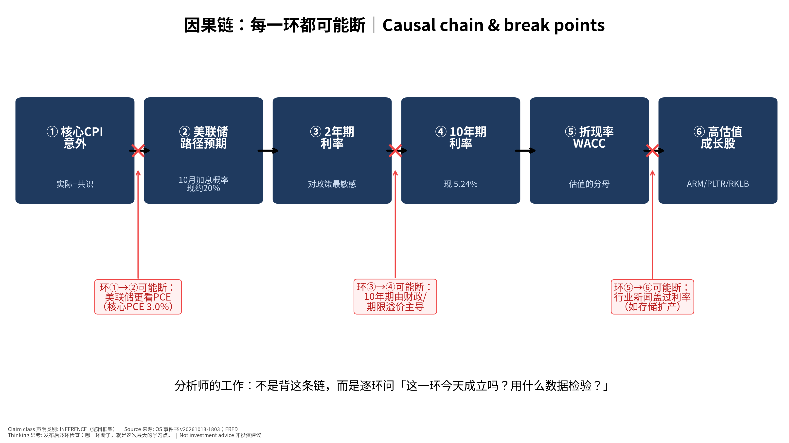
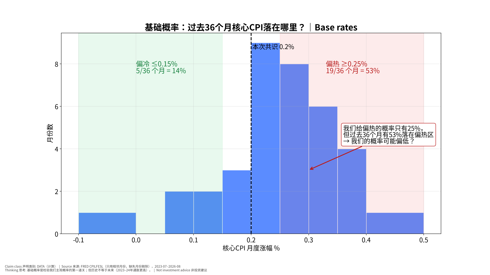
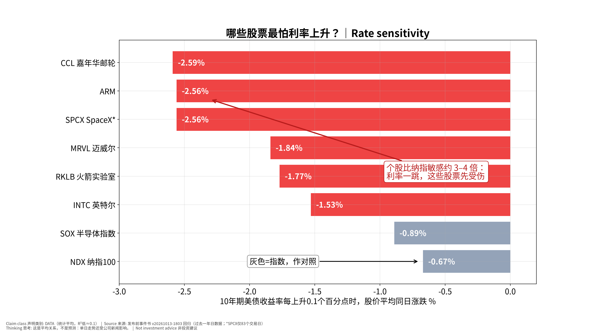

美国9月CPI：分析师的思考过程｜How
an Analyst Thinks Through US CPI (Sep 2026) v20261013-2047-think
公布：2026-10-14 20:30
新加坡时间 （BLS，CONFIRMED）。本版是对锁定的发布前事件书
v20261013-1803
的「思考过程重写版」；所有市场数字取自该书或
FRED，不新增预测。上一版教学试点 v20261013-2043-teach
保留。非投资建议。
一句话： 这份文件不是告诉你「答案」，而是演示一个分析师从零开始怎样提问、查证、搭因果链、找断点、反过来想 ——你可以把同样步骤用在任何事件或股票上。
🗺 阅读地图
你有多少时间
读哪里
2 分钟
读第0节「思考路线图」。
10 分钟
读第1节思考过程（Step 1–7）和第3节对立观点。
30 分钟
全部读完，做第4节推理题；公布后完成第5节推理复盘。
层级说明：L1 故事 （人人能懂）→ L2
关键数字 （带解释）→ L3
专业细节 （网页可折叠，默认收起）。
0. 思考路线图（你会看到的 7 步）
① 先问对问题 → ② 找出「市场已经定价了什么」→ ③ 搭因果链 → ④
找每一环的断点 → ⑤ 用工具箱逐一质疑 → ⑥ 给对立观点最强版本，再用证据裁判
→ ⑦ 写下「如果我错了，会先看到什么」。
1. 思考过程 Thinking
walkthrough
Step
1：第一个问题不是「CPI会是多少」，而是「谁在乎，为什么在乎」
我们关心
CPI，是因为它会改变美联储的下一步 ，而美联储决定资金成本 ，资金成本决定股票估值的分母 。
所以真正的问题是：这次 CPI 会不会改变市场对 10/28
美联储会议的预期？
查什么：市场现在给10月加息的概率约 20% ，12月约
73% （Kalshi，10/13，原书）。→
说明市场认为「10月大概率不动、年底可能动」。
为什么这一步重要： 如果 CPI
改变不了这个预期，它对股票的影响就有限——无论数字多「吓人」。
Step
2：市场已经定价了什么？（共识 （consensus：分析师预测的平均值，代表「市场在猜的数」）
vs 现实）
共识：核心环比 0.2% 、同比 2.5%（FactSet
2.4%）。我们：0.22%。差距只有 0.02 个百分点。
推论： 当所有人都猜 0.2%，0.2%
本身不是新闻 。股价只对预期差 （surprise
/ expectation gap：实际值减去共识，正数=比预期热）反应。财务经理类比： 预算是 0.2，实际也是 0.2 →
没有差异报告要写。只有超支或节余才会让老板（市场）反应。
Step
3：搭因果链，并给每一环找一个可检验的数据

因果链
📊 怎么看这张图
坐标/颜色： 6个深蓝方框是因果顺序（从左到右）；红色
× 和红框是可能断开的位置。只记住一件事： CPI 影响股票要经过 5
次传导，每一环都可能失效。什么会改变结论： 发布后用数据逐环检验：2年期动了吗？10年期跟了吗？成长股跌得比指数多吗？
环节
检验数据（发布后看）
成立的样子
①→② CPI意外 → 美联储预期
10月加息概率（CME/Kalshi）
偏热时 ≥30%
②→③ → 2年期
2年期首15分钟变化
偏热时 ≥+8bp
③→④ → 10年期
10年期是否同向
同向上升
④→⑤ → 折现率
实际利率（10Y 实际 2.87%）
上升
⑤→⑥ → 成长股
ARM/PLTR/RKLB vs 纳指
跌幅大于指数
Step
4：每一环可能在哪里断？（这是新手最常忽略的一步）
①→② 可能断： 美联储真正的目标是
PCE ，不是 CPI。8月核心PCE 同比约
3.0% ，比核心CPI（2.45%）更高。所以10/15的 PPI（会映射进
PCE）可能比 CPI 更重要。③→④ 可能断： 10年期已在
5.24% ，原书判断主要是期限溢价和财政 （借钱太多）推动的。CPI
偏冷，10年期也未必降。⑤→⑥ 可能断： 半导体自 10/6 已跌
7.4% ，主因是中国存储扩产（CXMT） 和「AI
资本成本」叙事，不是 CPI。把明晚半导体的涨跌全归因于
CPI，是典型的错误归因。
Step
5：用工具箱逐一质疑（见第2节）
Step
6：给对立观点最强版本，再用证据裁判（见第3节）
Step
7：写下证伪信号——「如果我错了，我会先看到什么」
我们说「大概率符合预期、影响有限」。如果我们错了 ，最先出现的信号是：公布后15分钟内
2年期变动 ≥8bp，且10月加息概率 ≥30%。看到这两个，就要承认「CPI
这次是大事件」。
① 第一性原理 First principles
是什么： 把问题拆到最基本的事实：价格 = 未来现金流 ÷
折现。为什么用： 避免被新闻标题带着走，只问「这件事改变了现金流还是折现率？」用在这次CPI上： CPI 不直接改变 ARM 或 NVDA
卖多少芯片（现金流），它只可能改变折现率。所以 CPI
对股票的影响上限 取决于它能把利率推多远。例：ARM
对10年期的利率敏感度 （rate
sensitivity (beta to
10Y)：10年期利率每升0.1个百分点，股票平均同日涨跌多少）约
−2.56%/+10bp，若偏热推高 10年期 8bp → 约
−2.0%（统计平均，R²≈0.1）。✍ 轮到你： 选一只你关注的股票：这次 CPI
会改变它的现金流 吗？还是只改变折现率 ？
② 二阶思维 Second-order
(然后呢？)
是什么： 不止问「会发生什么」，还问「然后呢？谁会因此改变行为？」为什么用： 一阶效果人人都想到，已被定价；二阶效果才可能是机会或风险。用在这次CPI上： 一阶：偏热 → 利率↑ →
成长股↓。二阶：利率↑ → 美元↑ → USD/JPY 接近
160 （2024年日本曾在此附近干预，FACT）→ 日本可能干预 →
日元急升 → 套息交易平仓 →
全球风险资产被动卖出。三阶：若日元急升，台日韩半导体链（雷达）可能比美股跌得更多。✍ 轮到你： 如果 CPI
偏冷 ，写出它的一阶和二阶影响（提示：美元↓、日元↑会怎样？）。
③ 反向思考 Inversion
是什么： 不问「我怎么对」，而问「什么情况会让我错？相反的结论要成立，需要哪些条件都为真？」为什么用： 人天然只找支持自己的证据（确认偏误）；反过来想能逼出盲点。用在这次CPI上： 我们的观点：「大概率符合，影响有限」。反过来：要让「CPI
引发大跌」成立，需要同时为真：(a) 核心 ≥0.25%；(b)
分项显示超级核心 （与工资相关）也在加速，而不只是一次性项目；(c)
10月加息概率跳升到 ≥30%；(d) 10年期与2年期同向上升。四个条件里，(a)
的基础概率不低（见工具⑥），但 (b)(c)(d)
同时成立需要更强证据——这就是我们给偏热 25%
的理由，也是可能出错的地方。✍ 轮到你： 写出让「CPI 引发大涨」成立的 3
个必要条件。
④ 市场已经定价了什么
Expectations vs reality
是什么： 价格反映的是预期 ；只有「实际
− 预期」才会推动价格。为什么用： 同样是 0.3%，如果大家都猜
0.3%，股市可能不跌；如果都猜 0.2%，就会跌。用在这次CPI上： 共识 0.2%；加息概率 10月 20%、12月
73%；半导体已跌 7.4%、10年期已
5.24%。推论： 市场已经相当悲观（利率高、半导体已调整）。所以「符合预期」甚至「略热」都可能出现利空出尽 的反弹；而偏冷的惊喜空间可能比偏热更大。✍
轮到你： 找一个今天的数字说明「市场已经担心通胀」。（提示：10年期在哪里？）
⑤ 谁在对手盘 Who is on the
other side
是什么： 每笔交易都有买卖双方。问：如果我是对的，谁是错的？他们为什么会错？为什么用： 如果想不出谁会错，说明你的观点很可能已被定价。用在这次CPI上： 若你押「偏热→科技股跌」，对手盘是已在低位买入半导体、押「利空出尽」的资金；还有已经做空、准备在数据后平仓的空头（平仓=买入，会推高价格）。韩国
KOSPI 当天
−5.46%、外资抛售（原书）说明很多人已经卖了——剩下的卖家变少 。✍ 轮到你： 如果你想在 CPI 前买入
NVDA，你的对手盘是谁？他们知道什么你不知道的？
⑥ 基础概率与历史类比 Base
rates
是什么： 先问「这类事情历史上多常发生」，再用本次特殊信息调整。为什么用： 防止被一个故事说服而忽略统计规律。用在这次CPI上： 过去 36
个可比月份（2023-07–2026-08，剔除停摆缺失月）核心CPI月度涨幅：偏热(≥0.25%)
19次（53%） ，符合 12次（33%） ，偏冷
5次（14%） ；平均
0.25%，波动（标准差）0.09%。最近12个月偏热 5 次。→
我们给偏热只有 25%，低于基础概率
53%。 为什么还可能合理？因为共识与投行都在
0.16–0.20%，8月有一次性项目会回吐（原书）。但基础概率提醒我们：25%
可能偏低 ，这是本次最值得记录的不确定性。✍
轮到你： 用图5：如果你只看基础概率不看新闻，你会给偏热多少概率？和我们的
25% 差多少？

基础概率
📊 怎么看这张图
坐标/颜色： 横轴=核心CPI月度涨幅，柱高=有几个月落在这个区间；绿区偏冷、红区偏热；虚线=本次共识0.2%。只记住一件事： 过去36个月有一半以上落在偏热区——「偏热」并不罕见。什么会改变结论： 如果把时间窗口拉长到疫情前（2015–2019，月度涨幅多在0.1–0.2%），偏热的基础概率会低很多：选哪个窗口本身就是一个假设。
⑦ 假设清单与证伪
Assumption list & falsifiers
是什么： 把观点背后的每个假设写出来，并给每个假设一个「一旦出现就推翻它」的信号。为什么用： 观点会错，但假设清单让你知道错在哪 ，下次能改。
用在这次CPI上： #
我们的假设
A1
8月的一次性项目（无线通信费）会回吐
分项中通信服务继续上涨
A2
住房/OER 只小幅回升
OER ≥0.35%
A3
市场主要通过 2年期反应
2年期变动 <3bp 但股市大幅波动
A4
半导体的主驱动不是 CPI
CPI 符合预期但 SOX 跌 >1.5% → 支持 A4；CPI 偏冷而 SOX 大涨 → 推翻
A4
A5
偏热概率 25%
若偏热，记录为「概率校准误差」并对照基础概率
✍ 轮到你： 给 A2 想一个你能在 BLS
报告里查到的具体数字。
3.
对立观点：先把它说到最强，再用证据裁判
我们的观点（Base）： 符合预期，核心
≈0.2%，影响有限，焦点转向 10/28。
对立观点的最强版本（Steelman）： 「通胀正在重新加速，市场低估了。」
1. 基础概率：过去 36 个月 53% 偏热，最近12个月 5 次偏热。 2. 8月核心
0.29% 已偏热；若9月 ≥0.25%，就是连续两个月，「趋势」成立。 3.
三个月年化即使「符合」也会升至约 2.9%（6月 −0.02%
移出窗口，原书）——标题会写「通胀动能回升」。 4. 核心PCE 已约
3.0%，美联储9月刚加息，说明美联储自己也认为通胀没降下来。 5.
油价上升（原书：航油→机票）有二次传导，超级核心与工资相关，最难降。
用证据裁判： | 证据 | 支持我们 | 支持对立观点 | 权重
| |—|—|—|—| | 共识与投行预测（0.16–0.20%） | ✔ | | 中（共识也常错） | |
基础概率（偏热 53%） | | ✔ | 高 | | 8月一次性项目回吐 | ✔ | |
中（是我们的假设A1） | | 劳动力降温（9月非农仅 +29k，失业率 4.2%） |
✔（工资压力↓） | | 中 | | 核心PCE 3.0%、美联储已加息 | | ✔ | 高 |
裁判结果： 证据大致平衡，对立观点比我们原来给的
25% 更有力 。一个更诚实的表述是：偏热概率可能在
30–40% （推断，基于基础概率调整）。我们保留原书锁定的
25%
不改写 （避免事后修改），但把「概率校准」列为本次复盘的头号检查项。
4.
推理测验（考「为什么」和「如果…会怎样」，不考记忆）
✅ 自我测验 Check your understanding
Q1. 如果核心CPI是 0.3%，但 2年期只涨了
2bp，最可能的解释是什么？你会检查哪两个数据？
答案： 市场已提前定价偏热、或分项显示是一次性项目（如机票）而非超级核心。检查：超级核心分项、10月加息概率是否变化。
Q2. 为什么「符合预期」也可能让股市上涨？
答案： 市场在数据前已悲观（10年期 5.24%、SOX
−7.4%），不确定性消除 + 空头平仓，会出现「利空出尽」。
Q3. 如果 CPI 偏冷但 MU
仍大跌，这说明因果链的哪一环断了？下一步你该看什么？
答案： ⑤→⑥ 断：MU 的驱动是行业供给（CXMT
扩产），不是折现率。下一步看存储合约价、CXMT
产能新闻、海力士/三星股价。
Q4. 为什么美联储可能「不太在乎」这次 CPI？这对你的交易判断意味着什么？
答案： 美联储目标是 PCE；CPI 中权重大的住房在 PCE
中权重较小。意味着 10/15 的 PPI（映射 PCE）可能同样重要，不应只押
CPI。
Q5. 如果你只能看一个数据来判断「CPI
是否改变了市场」，你选哪个？为什么不是 CPI 本身？
答案： 选 10月/12月加息概率或
2年期首15分钟变化——它们直接衡量「预期是否改变」，而 CPI 只是输入。
5.
发布后：推理复盘（不是只填数字）
第一步：先填事实 | 项目 | 共识 | 我们 | 实际 |
|—|—|—|—| | 核心环比 | 0.2% | 0.22% | ____ | | 超级核心 | — | — | ____ |
| 2年期首15分钟 | — | — | ____ bp | | 10年期 | — | — | ____ bp | |
10月加息概率 | 20% | — | ____ | | ARM/PLTR/RKLB vs NDX | — |
跌幅大于指数（若偏热） | ____ |
第二步：逐环检查因果链（图4） | 环节 | 成立/断开 |
证据 | 学到什么 | |—|—|—|—| | ①→② | ____ | ____ | ____ | | ②→③ | ____ |
____ | ____ | | ③→④ | ____ | ____ | ____ | | ④→⑤ | ____ | ____ | ____ |
| ⑤→⑥ | ____ | ____ | ____ |
第三步：检查假设清单 A1–A5 ：哪一个被证伪？
第四步：误差归类 （选一）：基本面预测错 / 预期定价错 /
市场反应判断错 / 时机错 / 概率校准错。
第五步：一句话教训 ：「下一次遇到类似事件，我会先检查
____，因为这次 ____ 环断了。」→ 写入下一份每日 OS 学习记录。
6.
补充图：核心CPI月度与利率敏感度
核心CPI月度
📊 怎么看这张图
坐标/颜色： 柱=每月核心CPI涨幅；绿区偏冷、红区偏热；黑虚线≈2%年目标的月度速度；最右虚框=本次共识。只记住一件事： 8月已在偏热区，9月是否连续偏热是「趋势」与「噪声」的分界。什么会改变结论： 若9月回到0.2%附近，8月更像噪声；若再≥0.25%，对立观点（通胀重新加速）胜出。

利率敏感度
📊 怎么看这张图
坐标/颜色： 横轴=10年期每升0.1个百分点，股价平均同日涨跌；红=个股，灰=指数。只记住一件事： CCL/ARM/SPCX/MRVL/RKLB
对利率最敏感。什么会改变结论： 这是低R²的平均关系：用它判断「方向和相对大小」，不要用它预测具体涨跌。
7. 术语表
Glossary（正文带下划线的词可悬停查看）
术语
白话意思
English
生活/财务比喻
共识
分析师预测的平均值，代表「市场在猜的数」
consensus
像集团给你的预算数
预期差
实际值减去共识，正数=比预期热
surprise / expectation gap
实际 vs 预算的差异（variance）
利率敏感度
10年期利率每升0.1个百分点，股票平均同日涨跌多少
rate sensitivity (beta to 10Y)
像汇率敏感度：汇率动1%，利润动多少
8. 来源
共识、我们的预测与概率、Kalshi 概率、利率敏感度、半导体/KOSPI
走势、ASML/TSM 信息：发布前事件书
v20261013-1803 （Source Ledger / Assumption Register
见其 Excel）。
核心CPI指数与基础概率：FRED
CPILFESL（BLS），仅用相邻月份；2025年10月因政府停摆缺失。
核心PCE 同比：FRED PCEPILFE（计算）。
English
summary — How an analyst reasons about this CPI
Seven steps: ask who cares and why (does CPI change the Fed path
priced at ~20% Oct / ~73% Dec hike odds?) → what is already priced
(consensus core 0.2%) → build the causal chain (CPI surprise → Fed path
→ 2Y → 10Y → WACC → long-duration stocks) → find break points (Fed
targets PCE ~3.0%; 10Y at 5.24% driven by term premium/fiscal; semis
driven by China memory supply) → apply the toolkit (first principles,
second-order, inversion, priced-in, counterparty, base rates, assumption
list) → steelman the opposite (re-acceleration: 53% of the last 36
months were ≥0.25%) and judge with evidence (our locked 25% hot
probability looks low vs base rates; kept unchanged, flagged for
calibration) → write falsifiers. Quiz tests reasoning; the post-mortem
checks each chain link and assumption A1–A5.